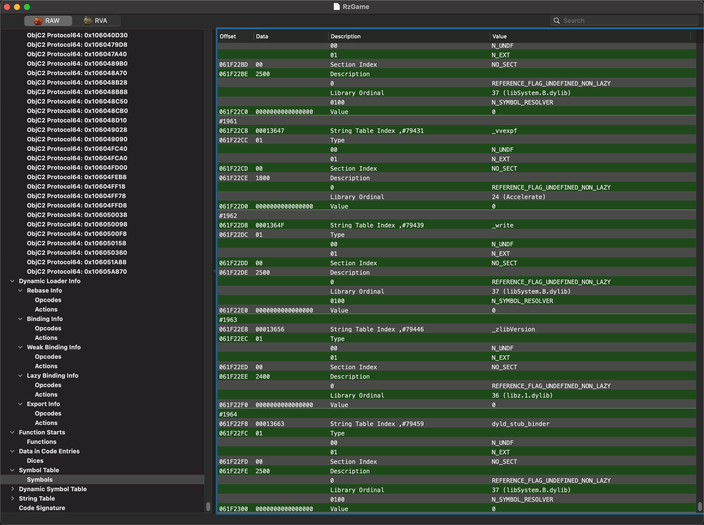
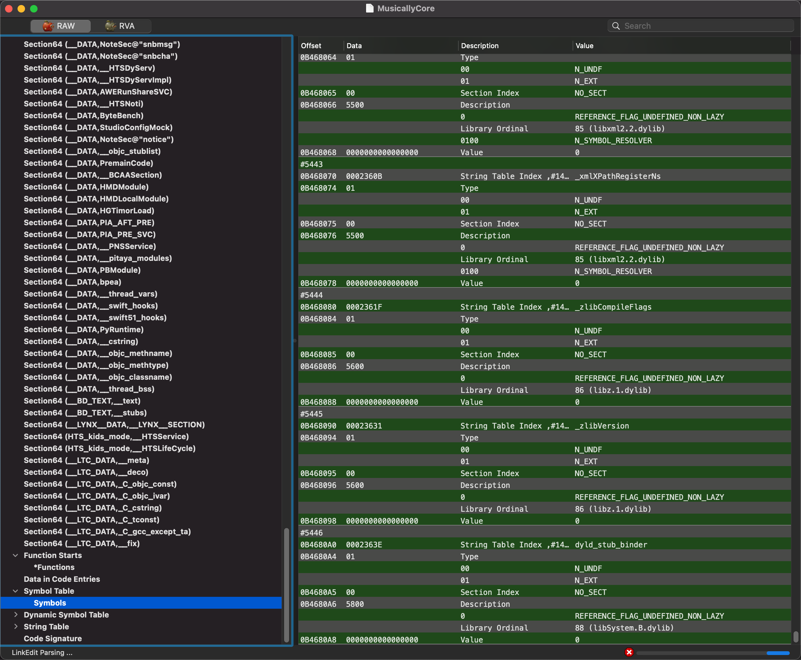
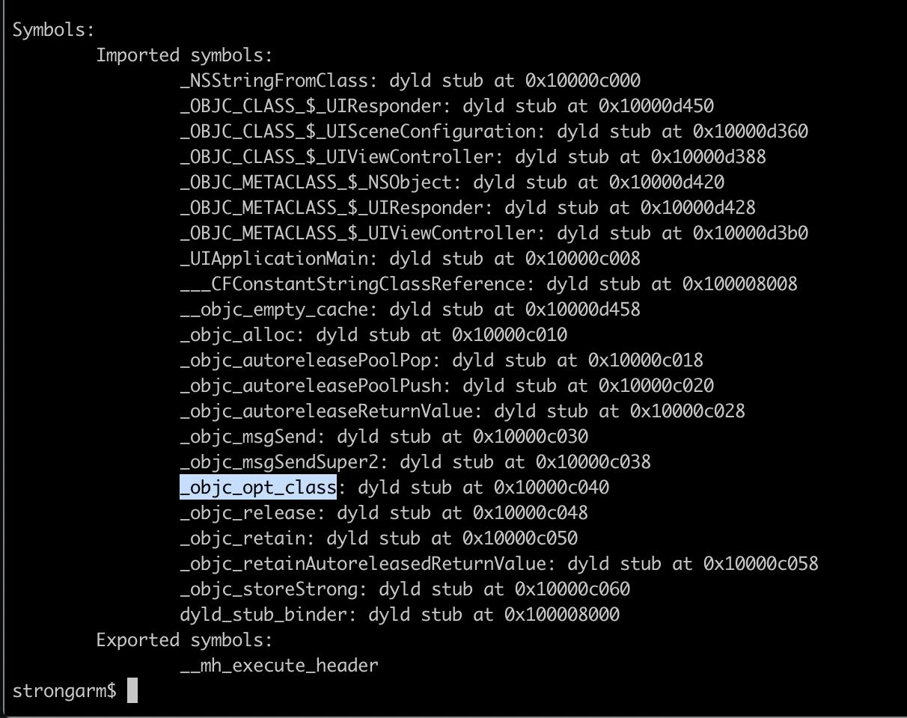

dyld_stub_binder
反汇编代码
libdyld.dylib`dyld_stub_binder:
-> 0x18d122dc0 <+0>: stp x29, x30, [sp, #-0x10]!
0x18d122dc4 <+4>: mov x29, sp
0x18d122dc8 <+8>: sub sp, sp, #0xf0 ; =0xf0
0x18d122dcc <+12>: stp x0, x1, [x29, #-0x10]
0x18d122dd0 <+16>: stp x2, x3, [x29, #-0x20]
0x18d122dd4 <+20>: stp x4, x5, [x29, #-0x30]
0x18d122dd8 <+24>: stp x6, x7, [x29, #-0x40]
0x18d122ddc <+28>: stp x8, x9, [x29, #-0x50]
0x18d122de0 <+32>: stp q0, q1, [x29, #-0x80]
0x18d122de4 <+36>: stp q2, q3, [x29, #-0xa0]
0x18d122de8 <+40>: stp q4, q5, [x29, #-0xc0]
0x18d122dec <+44>: stp q6, q7, [x29, #-0xe0]
0x18d122df0 <+48>: ldr x0, [x29, #0x18]
0x18d122df4 <+52>: ldr x1, [x29, #0x10]
0x18d122df8 <+56>: bl 0x18d1246e4 ; _dyld_fast_stub_entry(void*, long)
0x18d122dfc <+60>: mov x16, x0
0x18d122e00 <+64>: ldp x0, x1, [x29, #-0x10]
0x18d122e04 <+68>: ldp x2, x3, [x29, #-0x20]
0x18d122e08 <+72>: ldp x4, x5, [x29, #-0x30]
0x18d122e0c <+76>: ldp x6, x7, [x29, #-0x40]
0x18d122e10 <+80>: ldp x8, x9, [x29, #-0x50]
0x18d122e14 <+84>: ldp q0, q1, [x29, #-0x80]
0x18d122e18 <+88>: ldp q2, q3, [x29, #-0xa0]
0x18d122e1c <+92>: ldp q4, q5, [x29, #-0xc0]
0x18d122e20 <+96>: ldp q6, q7, [x29, #-0xe0]
0x18d122e24 <+100>: mov sp, x29
0x18d122e28 <+104>: ldp x29, x30, [sp], #0x10
0x18d122e2c <+108>: add sp, sp, #0x10 ; =0x10
0x18d122e30 <+112>: br x16
涉及到的例子
nm a.out
$ nm a.out
0000000100002008 d __dyld_private
0000000100000000 T __mh_execute_header
0000000100000f50 T _main
U _printf
U dyld_stub_binder
MachOView查看Undecember

MachOView查看MusicallyCore

nm Aweme
➜ Aweme.app nm Aweme
U __dyld_register_func_for_add_image
U _abort
U _awemeMain
U _dispatch_once_f
U _dlsym
U _free
U _getsectiondata
U _malloc
U _memcmp
U _memmove
U _objc_getClass
U _objc_lookUpClass
U _objc_setHook_getClass
U _posix_memalign
U _pthread_mutex_init
U _pthread_mutex_lock
U _pthread_mutex_unlock
U _realloc
U _strcmp
U _strlen
U dyld_stub_binder
和：
➜ Aweme.app nm -um Aweme
(undefined) external __dyld_register_func_for_add_image (from libSystem)
(undefined) external _abort (from libSystem)
(undefined) external _awemeMain (from AwemeCore)
(undefined) external _dispatch_once_f (from libSystem)
(undefined) external _dlsym (from libSystem)
(undefined) external _free (from libSystem)
(undefined) external _getsectiondata (from libSystem)
(undefined) external _malloc (from libSystem)
(undefined) external _memcmp (from libSystem)
(undefined) external _memmove (from libSystem)
(undefined) external _objc_getClass (from libobjc)
(undefined) external _objc_lookUpClass (from libobjc)
(undefined) weak external _objc_setHook_getClass (from libobjc)
(undefined) external _posix_memalign (from libSystem)
(undefined) external _pthread_mutex_init (from libSystem)
(undefined) external _pthread_mutex_lock (from libSystem)
(undefined) external _pthread_mutex_unlock (from libSystem)
(undefined) external _realloc (from libSystem)
(undefined) external _strcmp (from libSystem)
(undefined) external _strlen (from libSystem)
(undefined) external dyld_stub_binder (from libSystem)
AwemeCore
➜ AwemeCore rabin2 -i ../../../../已脱壳/v18.9.0/Payload/Aweme.app/Frameworks/AwemeCore.framework/AwemeCore > AwemeCore_rabin2_i.txt
->
5028 0x00000000 NONE FUNC dyld_stub_binder
和nm输出结果一样：
➜ AwemeCore.framework nm AwemeCore > nm_AwemeCore.txt
...
U dyld_stub_binder
AppleSRP.tbd
/Users/crifan/dev/dev_src/ios_reverse/AppleOpenSource/githubRepo/xybp888/iOS-SDKs/iPhoneOS14.5.sdk/System/Library/PrivateFrameworks/AppleSRP.framework/AppleSRP.tbd
--- !tapi-tbd-v3
archs: [ armv7, armv7s, arm64, arm64e ]
platform: ios
flags: [ flat_namespace ]
install-name: /System/Library/PrivateFrameworks/AppleSRP.framework/AppleSRP
current-version: 1
compatibility-version: 1
exports:
- archs: [ armv7, armv7s, arm64, arm64e ]
symbols: [ _BigIntegerAdd, ...
undefineds:
- archs: [ armv7, armv7s, arm64, arm64e ]
symbols: [ _CCBigNumAdd, ... _strlen, dyld_stub_binder ]
Some Symbols

杂项
该地址指向的是__la_symbol_ptr节，而该节最终都指向了dyld_stub_binder。
和：
其实际内容都指向了_TEXT.stub_helper节，最终通过jumpq指令跳转到了dyld_stub_binder符号，即got节中的Non_Lazy Symbol Pointer中的条目，该符号为一个函数，定义于dyld_stub_binder.S，由 dyld 提供。
dyld_stub_binder函数其大致逻辑是：内部会寻找锁调用符号的真实地址，并写入_la_symbol_ptr条目中，然后跳转到真实地址执行；
和：
__stub_helper:000000010000A394 LDR X16, =dyld_stub_binder
__stub_helper:000000010000A398 BR X16 ; dyld_stub_binder
随后就会调用dyld_stub_binder函数进行符号绑定，这也是一个外部符号。当然你可能会说这样的话不就死循环了吗？其实不是，这个符号并不是lazy的即在初始化过程中就确定了地址。这里dyld_stub_binder的代码如下
libdyld.dylib`dyld_stub_binder: -> 0x181bccb64 <+0>: stp x29, x30, [sp, #-0x10]! ...
- 接着就是去调用dyld_stub_binder函数进行符号绑定，第一次找到该符号地址以后直接返回给调用处，并且将DATA,la_symbol_ptr中objc_msgSend的指针值更改为找到的符号地址。这样下一次就不会跳转到TEXT,stub_helper里面，而是直接跳转到正确的函数地址。
__stub_helper:000000010000A384 ; Segment type: Pure code __stub_helper:000000010000A384 AREA __stub_helper, CODE, READWRITE __stub_helper:000000010000A384 ; ORG 0x10000A384 __stub_helper:000000010000A384 CODE64 __stub_helper:000000010000A384 ADR X17, off_10000C030 __stub_helper:000000010000A388 NOP __stub_helper:000000010000A38C STP X16, X17, [SP,#-0x10]! __stub_helper:000000010000A390 NOP __stub_helper:000000010000A394 LDR X16, =dyld_stub_binder __stub_helper:000000010000A398 BR X16 ; dyld_stub_binder